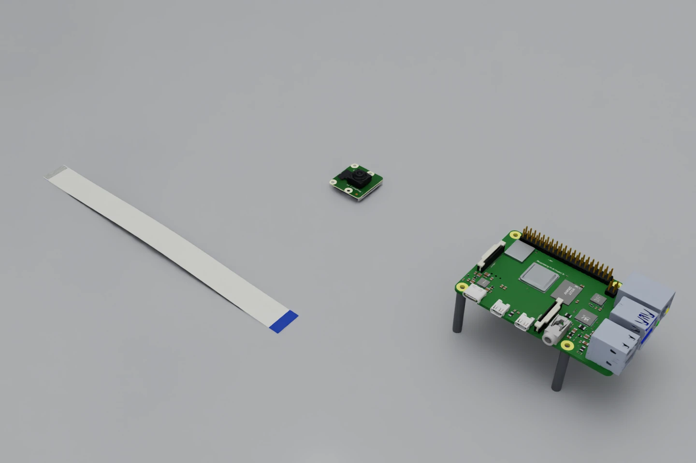
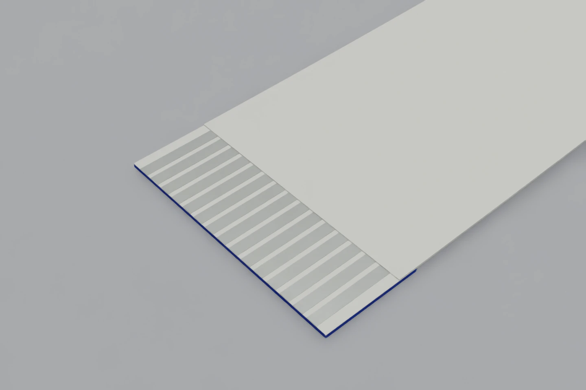

Hardware / CAD review
Two cables.
Two skills.
A Raspberry Pi camera ribbon first. A phone-style press-on flex next.
Inspect the actual sceneNew: Pi Zero 2 W sideways-insertion scene, 4K views and review video →

The scene is refined. Perception development has started.
The scene now contains a Pi 4 Model B, official Camera Module 3 geometry and a cable built from Raspberry Pi’s dimensioned drawing. The board outline and mounting holes pass inspection. The refinement adds 102 drawing-derived package footprints, seven board labels and separate connector materials. The first RGB segmentation experiment uses this scene for synthetic development. Real-camera qualification, connector mechanics and contact learning remain open.
Start with the hardware we will touch.
These are renders from the saved USD workcell. Select a view to inspect the board, cable or camera module.

The selected image could not load. Choose another view or reload the page.
Component counts reflect imported assembly leaves, which may contain multiple solids. The counts describe tessellation complexity, not physical accuracy.
The ends matter as much as the ribbon.
The earlier 8 mm ribbon was a generic research placeholder. The selected standard camera cable is 16 mm wide, has reinforced ends and exposes its contacts on opposite faces. That makes face recognition part of the task: a good-looking alignment can still present the wrong surface to the socket.

| Feature | Nominal dimension | Why we model it |
|---|---|---|
| Length / width | 200 / 16 mm | Reach, bending and tool clearance |
| Contacts / pitch | 15 / 1.000 mm | Alignment and image scale |
| Conductor width / thickness | 0.700 / 0.027 mm | Exposed contact geometry; later laminate mechanics |
| Exposed contact length | 5.000 mm | Face recognition and visible seating cues |
| Support tape length | 6.300 mm | Where the end resists bending |
| Reinforced contact header | 0.309 mm | Tip clearance and grasp thickness |
| Insulation layer | 0.055 mm | Body construction |
The renderer uses a 0.137 mm body, derived as one conductor layer plus two insulation layers. Adhesive contributions and the support transition require a physical cross-section check. The shallow curve is authored, not the result of a gravity or FEA solve. Official cable drawing and tolerances.
Enter from above. Then secure the latch.
The Pi 4 CSI camera connector is upright. We must reorient the desk pickup into a vertical cable tip before insertion.
The target is the camera connector between the micro HDMI connector and audio jack. The other ribbon connector serves the display. A perception system must distinguish them using board context, then resolve the mouth and cable face at close range.
Locate an accessible cable end and establish a stable grip.
Reorient the tip and confirm which side has exposed contacts.
Approach the open socket from above with visual and contact feedback.
Close the latch, withdraw the tool and test the connection.
Raspberry Pi’s instructions describe lifting and slightly tilting the flap, inserting the contacts facing away from it, then returning and pressing the flap down. The 5 mm exposed contact length is not a specified insertion-depth target. The actual seat and latch travel must be measured. Official installation procedure.
For the first controlled insertion experiment, the far end can already be attached to Camera Module 3 and the Pi latch can start open. That isolates one insertion skill. Later experiments add latch manipulation and handling the tethered camera module. The static review currently shows all three parts separately.
A realistic scene needs several checks.
Board scale and mounting
The imported Pi PCB measures 85 × 56 mm. Four 2.7 mm holes lie on the 58 × 49 mm pattern in Raspberry Pi’s drawing. These checks use the CAD geometry, not a screenshot.
Camera and connector surroundings
The official Camera Module 3 simplified STEP preserves its board, lens assembly, silkscreen geometry and components. Pi 4 CAD provides the camera socket, nearby ports, chips and clearance context.
Perception appearance
The refinement adds small package proxies at 102 drawing-derived footprints and seven approximate board labels. Each ribbon socket now separates 15 metal contacts and two polymer solids. Package types and heights, fonts and finishes are assumptions; this is not a recovered BOM. Solder mask, metal and polymer finishes are unmeasured; scratches, glare, lens response and real camera noise are not calibrated.
Insertion contact and latching
These CAD meshes have no task colliders, spring compliance or latch articulation. No convex hull seals the cavity because no hardware contact proxy is enabled yet. Geometric detail alone does not supply a correct force response.
Cable deformation and touch
This cable is a static visual mesh. The earlier generic ribbon’s stiffness, mass and success thresholds are not transferred to it. Laminate identification, end reinforcement, friction and tactile response need their own measurements.
We can use this milestone to review layout and camera access and train a first synthetic segmentation baseline. We cannot yet use it to claim photorealistic perception performance, contact fidelity or a learned insertion skill. Read the geometry audit.
A phone flex presses onto its mate.
Stage 2 is a flexible printed circuit with a tiny press-on board connector. The flexible tail may turn through 90°, while the connector halves mate normal to the PCB.
We will start with a replaceable research coupon so that both sides of the connection are accessible and failures are measurable. A specific phone assembly can follow once its part numbers, flex stack and reinforcement are known.
| Stage 1 / Pi ribbon | Stage 2 / Phone-style flex | |
|---|---|---|
| Object at the tip | Exposed flat conductors and stiffener | A rigid miniature connector on reinforced FPC |
| Mating action | Slide into the open ZIF slot; close latch | Bring aligned connector halves together with a controlled press |
| Critical perception | Cable face, edges, socket mouth, latch | Connector footprint, relative tilt, grasped pose, seating gap |
| Contact cues | Edge catch, buckling, grip slip | Uneven engagement, off-axis loading, incomplete mating |
| Completion evidence | Seating, latch, retention, electrical function | Even seating, retention after release, electrical function |
A representative connector family
Hirose BM28 is a candidate for the research coupon: a 0.35 mm-pitch FPC-to-board family with 0.6 mm mating height. The supplier describes guide features and tactile mating feedback. It requires parallel mating after alignment. This is a documented representative family, not a claim about the connector inside any particular phone. Hirose BM28 catalog and handling instructions.
The catalog specifies ten mating durability cycles, so trial accounting must include connector wear and replacement. The next design step is to select a matched plug and receptacle, import both CAD models, design an accessible flex coupon, and measure mating and release curves. We will grip the reinforced area, support the PCB locally, and avoid routing the tail so that it peels the connection open. Force limits and pressing locations will come from that assembly’s guidance and bench measurements.
What carries over from Stage 1
The FR3, camera calibration, tactile/force interfaces, observation recorder and bounded action interface can be shared. The grasp tooling, flex mechanics, contact model, recovery behavior and completion checks must be qualified again. A force drop or tactile click alone cannot certify electrical seating.
Earn each next step with evidence.
1 / Finish the asset gate
Compare the Pi CAD with physical photos and measurements. Resolve missing components, contact face, open latch geometry and sightlines. Keep material assumptions explicit.
Current: CAD loaded and visually refined; outline and hole pattern pass. Material calibration and mating detail remain open.
2 / Qualify perception without motion
Use fixed, calibrated global and close-up cameras. Detect the cable’s usable end, exposed face, CSI socket and latch. Evaluate held-out real images alongside synthetic images, including glare and occlusion.
Current: RGB segmentation baseline and held-out synthetic evaluation implemented. Gate: real-image pose errors fit measured task clearance and uncertainty rejects ambiguous observations.
3 / Identify contact and deformation
Measure ribbon bending, stiffener response, friction and connector interaction. Compare FEA and reduced models against held-out force and shape measurements. Calibrate tactile and wrench signals.
Gate: a declared error budget passes across specimens; no hidden-state signal substitutes for a sensor.
4 / Learn bounded component skills
Collect sensor-driven demonstrations for pickup, reorientation, alignment and recovery. Start with imitation learning. Add reinforcement learning only where the calibrated environment and measured failure cases justify it.
Gate: actor, critic, stage transitions and rewards use deployable evidence. Simulator truth stays in offline evaluation.
5 / Assemble and transfer
Add latch closure and electrical confirmation to the Pi task. Then repeat the asset, measurement and local-skill gates for the phone-style connector before composing Stage 2.
Gate: report all attempts, damage, false seating, recovery and interventions on held-out hardware.
The earlier static-camera software prototype exercised image ingress and process isolation on the generic scene. It is retained as infrastructure evidence; its detections do not qualify perception on these Raspberry Pi assets.
Trace every asset to its source.
- Pi 4 CAD: MGS-CAD-Files, Raspberry Pi 4 Model B v4, pinned to commit
c2cc26be. Community geometry, not manufacturer CAD. No explicit asset licence was found; original and converted CAD stay outside this repository. - Pi 4 dimensions: Raspberry Pi official mechanical drawing.
- Camera Module 3: Raspberry Pi official design files, normal-FoV simplified STEP. Source names are preserved even where CAD part labels are generic.
- Cable: Official Standard-Standard 200 mm reference drawing.
- Other Pi CAD reviewed: PartCAD Pi 4 STEP and hannahdesigns’ CC BY model. The former lacked colour detail; the latter’s STEP download requires an account. Neither is the displayed model.
Download source hashes · Render and assembly report · Selected task specification · Reproduce the original import · Refinement and RGB perception experiment
Imported CAD colours are preserved in the conversion. The review scene applies documented, unmeasured material overrides to selected board, header, shield and lens surfaces. CAD conversion does not establish calibrated visual or mechanical behavior.